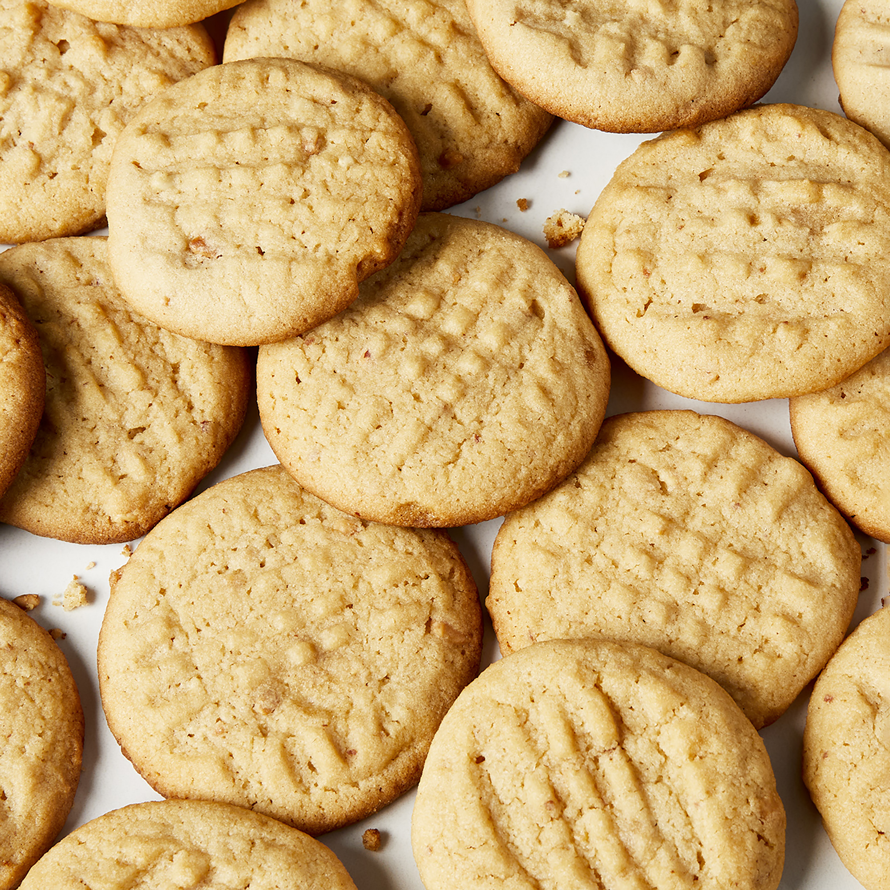

Peanut Butter Cookies

Description
A peanut butter cookie is a type of cookie that is distinguished for having peanut butter as a principal ingredient.
The cookie originated in the United States, its development dating back to the 1910s.
Ingredients
- 1 cup unsalted butter
- 1 cup crunchy peanut butter
- 1 cup white sugar
- 1 cup packed brown sugar
- 2 large eggs
- 2½ cups all-purpose flour
- 1 teaspoon baking powder
- ½ teaspoon salt
- 1½ teaspoons baking soda
Steps
- Cream butter, peanut butter, and sugars together in a bowl; beat in eggs.
- In a separate bowl, sift flour, baking powder, baking soda, and salt; stir into butter mixture.
Put dough in refrigerator for 1 hour.
- Roll dough into 1 inch balls and put on baking sheets. Flatten each ball with a fork, making a crisscross pattern.
Bake in a preheated 375 degrees F oven for about 10 minutes or until cookies begin to brown.